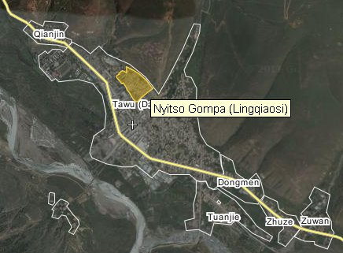

Des groupes de défense des droits de l’Homme en appellent au gouvernement chinois
mercredi 9 novembre 2011 par Rédaction , Monique Dorizon
Dans un appel direct au Président chinois Hu Jintao, deux grandes organisations de défense des droits humains ont appelé le gouvernement chinois à mettre fin aux politiques répressives dans les régions tibétaines.
Le 3 novembre 2011, une lettre conjointe de Human Rights Watch (HRW) et Amnesty International demande que la Chine mène un "examen approfondi de la situation des droits humains à travers le plateau tibétain et mette fin aux restrictions juridiques et politiques qui violent les droits de
l’Homme dans la région" ont déclaré les deux groupes dans une déclaration commune le 8 novembre 2011.
"Le gouvernement chinois doit mettre un terme aux politiques répressives qui portent atteinte aux libertés fondamentales des Tibétains" a déclaré le Secrétaire général d’Amnesty International, Salil Shetty, dans un communiqué.
"Des années de restrictions des droits des Tibétains ont conduit à de nouveaux troubles et des actes de désespoir" a ajouté Kenneth Roth, Directeur exécutif de Human Rights Watch.
"Il est clairement temps que le gouvernement chinois repense fondamentalement son approche en écoutant et en tenant compte des griefs des Tibétains".
Les protestations par l’auto-immolation par le feu de moines tib√©tains et de nonnes, lors lesquelles au moins six d’entre eux sont soup√ßonn√©s d‚Äô√™tre d√©c√©d√©s [1], constituent un "acte d’accusation profonde des politiques du gouvernement chinois envers les Tib√©tains" a d√©clar√© Sophie Richardson, Directrice de HRW Chine bas√©e √† Washington, s‚Äôexprimant sur Radio Free Asia.
"Les gens n’ont pas recours √† ce genre de comportement sauf s‚Äôils sentent qu’ils n’ont plus rien √† perdre", a d√©clar√© Richardson.
"Nous avons pass√© √©norm√©ment de temps non seulement √† mobiliser le soutien public, mais √† obtenir des gouvernements qu‚Äôils r√©pondent de mani√®re constructive". "Et par constructive, je veux dire amener le gouvernement chinois √† r√©pondre d‚Äôune foule d’abus dans les r√©gions tib√©taines, mais aussi √† revenir √† la table pour parler avec les repr√©sentants tib√©tains sur leurs dol√©ances", a d√©clar√© Sophie Richardson.
"Je pense que ces (manifestations) sont une fa√ßon de dire : « Le monde nous a perdu de vue, nous et nos probl√®mes, et nous avons besoin de votre soutien pour faire pression en vue d’un r√©sultat » et c’est exactement ce que nous essayons d’amener les gouvernements √† faire".
En attendant, des milliers de Tib√©tains se sont rassembl√©s dimanche 6 novembre pr√®s d’un monast√®re dans la province chinoise du Sichuan pour la cr√©mation d’une nonne d√©c√©d√©e la semaine derni√®re lors d‚Äôune 11√®me auto-immolation dans les zones peupl√©es de Tib√©tains, cette ann√©e [2].
Palden Choetso [3], une nonne de 35 ans, appartenant √† un couvent du Comt√© de Tawu [4], Pr√©fecture de Kardz√© [5], s’est immol√©e le 3 novembre, tout en criant des slogans appelant √† la libert√© pour le Tibet.
"Le corps de Palden Choetso a été incinéré à 5h00, le 6 novembre au même endroit, près du monastère de Nyitso, là où le corps de Tsewang Norbu (s’étant lui aussi immolé par le feu [6]) a été incinéré", rapporte Lobsang Jinpa, ancien prisonnier politique tibétain vivant actuellement en Inde, citant des sources dans la région.
"Un nombre sans précédent de personnes ont convergé vers Tawu pour montrer leur solidarité et leur soutien pour la nonne décédée", raconte Lobsang Jinpa.
Dirigé par des moines et des religieuses de Nyitso et des autres monastères de la région, des centaines de laïcs ont rejoint le cortège funèbre de la nonne.
"Les gens tenaient des lampes à beurre dans leurs mains et récitaient des prières", a déclaré Jinpa.
"Les moines avaient pr√©vu d’√©riger un monument pour la nonne sur le site de la cr√©mation, mais les autorit√©s chinoises ne le permettront pas", dit Jinpa, ajoutant que la police chinoise et les forces de s√©curit√© ont maintenant entour√© le monast√®re de Nyitso. [7]
"Des policiers armés ont également pris position dans une ancienne salle de cinéma à côté du monastère, mais ne sortent pas".
"Sous son chapeau, quand elle s’est immolée, Palden Choetso avait des photos du Dalaï Lama et du Karmapa", rapporte Yama Tsering, autre tibétain exilé en Inde, citant des contacts à Tawu.
"Étrangement, les images sont restée intactes, alors que son corps entier était en flammes", a déclaré Yama Tsering.
"Les Tib√©tains de la r√©gion ont exhort√© les Tib√©tains en exil √† porter leur d√©tresse √† l’attention internationale", dit Lobsang Jinpa.
"Parmi les Tibétains de Tawu, circule l’idée que si la Chine ne parvient pas à négocier avec le Dalaï Lama, et si le Dalaï Lama ne peut pas retourner au Tibet, la situation peut encore empirer".
Source : Radio Free Asia, Human Rights Watch, Amnesty International, 7 novembre 2011.
Vous avez apprécié cet article ? Faites-le suivre à vos amis !
[1] Voir l’article r√©capitulatif "Immolations : r√©capitulatif, actions et r√©actions", du 30/10/2011.
[2] Voir l’article "Une nonne tib√©taine meurt apr√®s s‚Äô√™tre immol√©e par le feu en Chine", du 03/11/2011.
[3] Palden Choetso est identifiée sous son nom chinois de Qiu Xiang par Chine Nouvelle et dans divers médias, y compris dans les dépêches AFP.
[4] Tawu, ou Daofu (道孚县) en chinois), peut être localisé sur cette carte.
[5] Kardzé (Ganzi ou 甘孜县 en chinois), parfois écrit Garzé, est situé dans la province chinoise du Sichuan et peut être localisé sur cette carte.
[6] Voir l’article "Nouvelle immolation d’un moine au Tibet", du 15/08/2011.
[7] Le monastère de Nyitso est situé au nord de la ville de Tawu, comme indiqué sur cette carte.
